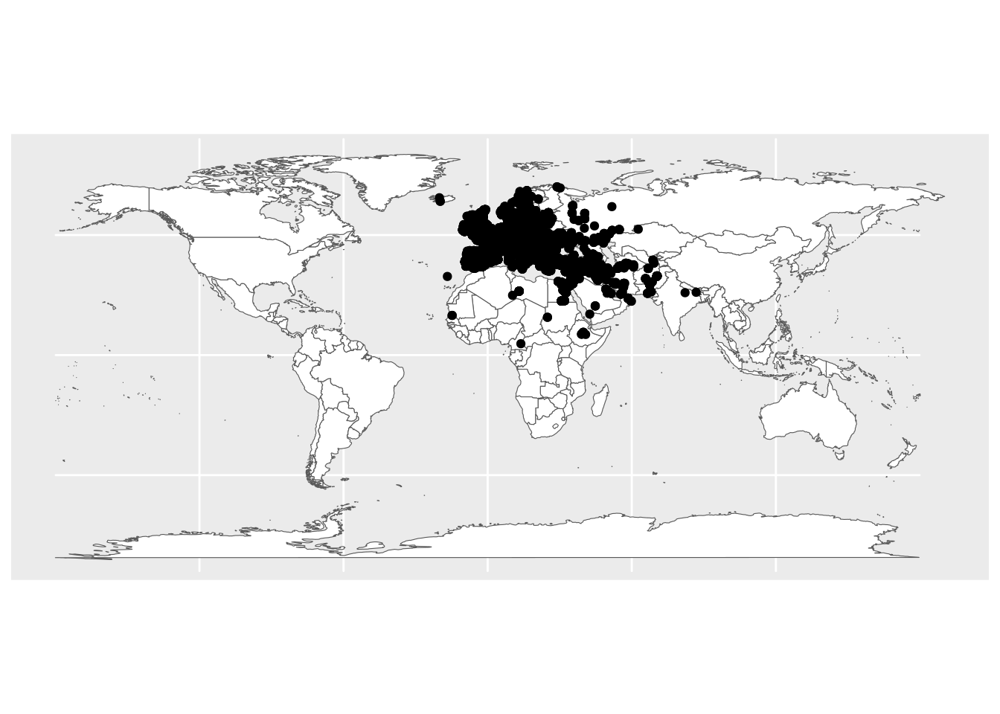
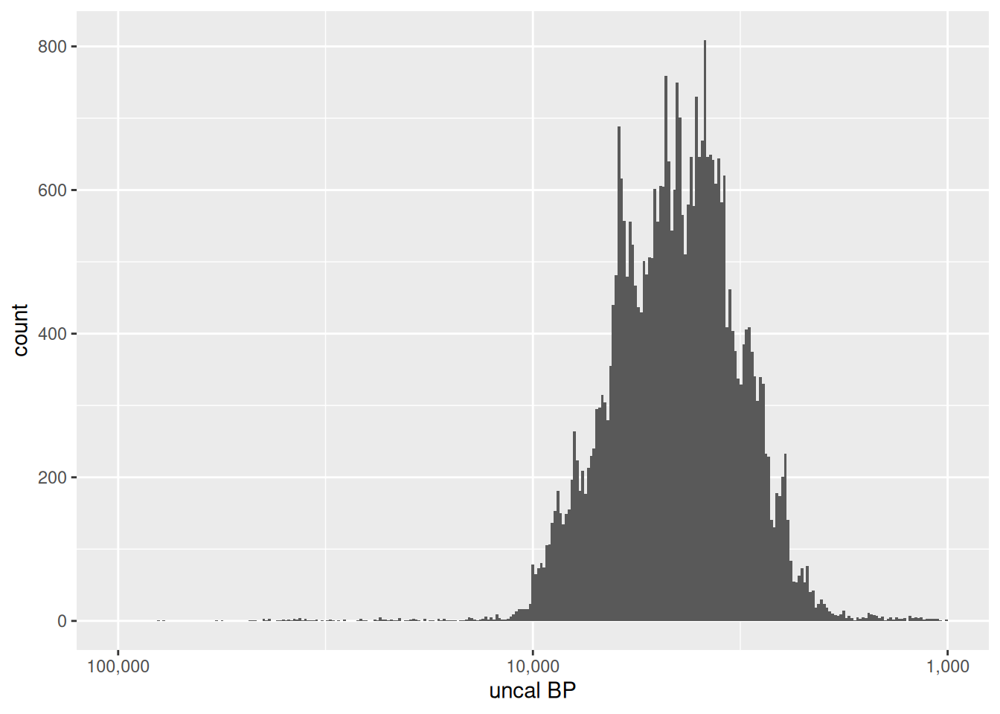

library("ggplot2")
library("maps")
library("sf")
library("tidyr")Radiocarbon and aoristic modelling
MOSAIC Summer School, Bibracte, 2–6 September 2024
1 Introduction
- Aside: tidy data
2 Acquiring radiocarbon data
Where you get your radiocarbon data will vary considerably based on your application, region and period of interest. An in-depth regional study will very likely involve at least some compilation of dates from the primary literature. However, there are a number of global ‘metadatabases’ available that provide a good starting point for many analyses. Here we will focus on two that have an R interface: c14bazAAR and XRONOS.
c14bazAAR lets you download and collate a large number (26 as of writing) of open radiocarbon compilations, mostly covering specific regions. After you have installed the package, you can download all of them at once, but this is time-consuming:
# Don't run:
c14bazAAR::get_all_dates()Instead, let’s combine three databases that cover Western Europe: Radiocarbon Palaeolithic Europe, NeoNet (Mesolithic–Neolithic), and RADO.NB (Neolithic–Iron Age):
weurope_c14 <- c14bazAAR::get_c14data(c("14cpalaeolithic", "neonet", "rado.nb"))Trying to download all dates from the requested databases...
|
| | 0%
|
|++++++++++++ | 25%Warning in utils::download.file(db_url, destfile = temp, mode = "wb", quiet =
TRUE): downloaded length 581632 != reported length 2115211Warning in utils::download.file(db_url, destfile = temp, mode = "wb", quiet =
TRUE): URL
'https://ees.kuleuven.be/en/geography/projects/14c-palaeolithic/download/radiocarbon-palaeolithic-europe-database-v31.xlsx':
Timeout of 60 seconds was reached
|
|+++++++++++++++++++++++++ | 50%
|
|+++++++++++++++++++++++++++++++++++++ | 74%
|
|++++++++++++++++++++++++++++++++++++++++++++++++++| 99%Warning in c14bazAAR::get_c14data(c("14cpalaeolithic", "neonet", "rado.nb")): There were errors:
14cpalaeolithic --> download from 'https://ees.kuleuven.be/en/geography/projects/14c-palaeolithic/download/radiocarbon-palaeolithic-europe-database-v31.xlsx' failed
Not all data might have been downloaded accurately!
In case of a timout try increasing the download time with options(timeout=300).
|
|++++++++++++++++++++++++++++++++++++++++++++++++++| 100%The advantage of using c14bazAAR (as opposed to simply downloading the individual datasets) is that it standardises the different data structures and variable names used by the different sources and gives you a single table:
Radiocarbon date list
dates: 37791
sites: 8939
countries: 75
uncalBP: 80000 - 0
# A data frame: 37,791 × 17
sourcedb sourcedb_version labnr c14age c14std c13val site sitetype feature
<chr> <date> <chr> <int> <int> <dbl> <chr> <chr> <chr>
1 rado.nb 2024-09-03 Bln-32… NA NA NA Budk… <NA> <NA>
2 rado.nb 2024-09-03 K-1114 1960 100 NA Hjor… bogfind <NA>
3 rado.nb 2024-09-03 B-2745 3490 85 NA Padn… fortifi… "Siedl…
4 rado.nb 2024-09-03 OxA-32… 3490 60 -21.4 Poul… <NA> "34-17…
5 rado.nb 2024-09-03 P-1895 3324 51 NA Akro… <NA> <NA>
6 rado.nb 2024-09-03 MAMS-n… 3737 22 NA Klob… settlem… "40316"
7 rado.nb 2024-09-03 Bln-56… 3507 37 NA Oarţ… settlem… <NA>
8 rado.nb 2024-09-03 K-3247 4110 85 NA Sjør… single … "\"Fro…
9 rado.nb 2024-09-03 Ly-2323 5860 190 NA Menn… settlem… "FOSSE…
10 rado.nb 2024-09-03 ETH-98… 4755 60 NA Högb… single … "skele…
# ℹ 37,781 more rows
# ℹ 8 more variables: period <chr>, culture <chr>, material <chr>,
# species <chr>, country <chr>, lat <dbl>, lon <dbl>, shortref <chr>The most important columns from a chronological perspective are c14age (the conventional radiocarbon age, CRA) and c14std (the error associated with the age). In addition, we have a lot of metadata. This includes coordinate columns (lat and lon), which we can use to inspect the geographic coverage of our dataset:
weurope_c14 |>
as_tibble() |>
drop_na(lon, lat) |>
st_as_sf(crs = 4326, coords = c("lon", "lat")) |> # EPSG:4326 = WGS84 lat/long
ggplot() +
geom_sf(data = st_as_sf(map("world", plot = FALSE, fill = TRUE)),
fill = "white") +
geom_sf()
Similarly, we can use plot the distribution of the radiocarbon ages to quickly visualise the chronological coverage (remember the scale here is uncalibrated years BP):
ggplot(weurope_c14, aes(c14age)) +
geom_histogram(bins = 300) +
scale_x_continuous(
name = "uncal BP",
labels = scales::label_comma(),
limits = c(100000, 1000),
transform = c("log10", "reverse")
)Warning in scale_x_continuous(name = "uncal BP", labels =
scales::label_comma(), : composition(log-10,reverse) transformation introduced
infinite values.Warning: Removed 200 rows containing non-finite outside the scale range
(`stat_bin()`).
- c14bazAAR
- XRONOS & xronos.R
- Aside: other sources of radiocarbon data (esp. regional)
2.1 Exercises
- How many of the dates in our
weurope_c14dataset are missing a) a lab number b) a radiocarbon age c) a radiocarbon error and d) coordinates?
3 Cleaning radiocarbon data
- BP/BCE -> era
- Aside: chronometric hygiene and importance of metadata
3.1 Exercises
4 Radiocarbon calibration
- Aside: tidy modelling / nested data frames
4.1 Exercises
5 Constructing aoristic periods
- With a uniform distribution
- With a trapezoidal distribution (a la OxCal) ?
- ‘Calendar probability distributions’
5.1 Exercises
6 Summarising dates
- Mid-point estimates
- Aside: caveat empor
- Ranges
- Summarise by other variables
6.1 Exercises
7 Plotting dates
- Plotting the probability distribution
- Plotting summaries
- Bernie’s plot
7.1 Exercises
8 Aggregating dates
- SPD
- (c)KDE
- Aside: extensive literature on aggregation
- Aggregate by other variables